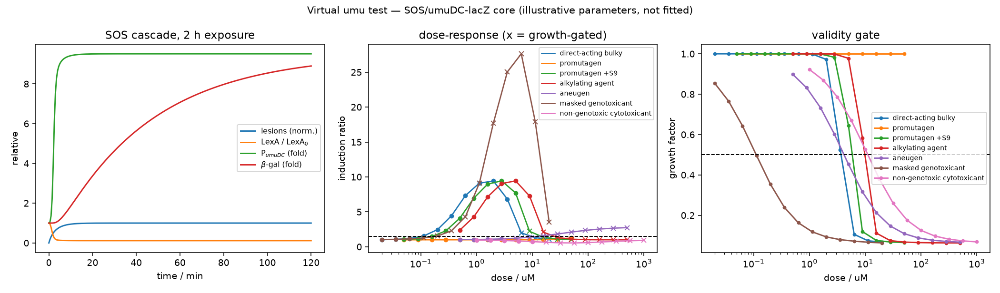
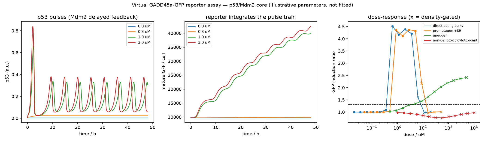
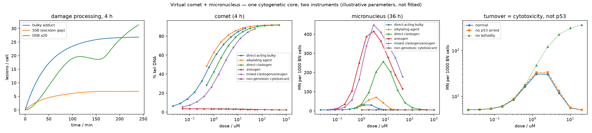

<title>Virtual Genotoxicity Assays</title>
<link rel="stylesheet" href="https://fonts.googleapis.com/css2?family=Newsreader:ital,opsz,wght@0,6..72,400;0,6..72,500;0,6..72,600;1,6..72,400&family=IBM+Plex+Mono:wght@400;500&family=IBM+Plex+Sans:wght@400;500;600&display=swap">
<style>
:root{
  --ground:#F5F6F8; --surface:#FFFFFF; --surface-2:#FAFBFC;
  --ink:#10151C; --ink-2:#2B333D; --muted:#5B6672; --faint:#8A939E;
  --line:#DEE2E8; --line-soft:#EAEDF1;
  /* endpoint hues = the colour each assay's signal actually is */
  --umu:#9A6B06;    /* o-nitrophenol, 410 nm */
  --p53:#2F7A3A;    /* GFP, 509 nm */
  --cyto:#2A5A9E;   /* DAPI, 461 nm */
  --accent:#0E6570; /* page chrome */
  --pos:#A6322A; --pos-bg:#F7E9E7;
  --neg:#4B6551; --neg-bg:#E9EFEA;
  --inc:#8A6008; --inc-bg:#F8EEDC;
  --h-bg:#EEF0F4; --h-fg:#4C5561;
  color-scheme:light;
}
@media (prefers-color-scheme:dark){ :root:not([data-theme="light"]){
  --ground:#0E1216; --surface:#161B21; --surface-2:#1A2027;
  --ink:#E8ECF1; --ink-2:#C8D0D9; --muted:#96A1AD; --faint:#6E7A87;
  --line:#2A323B; --line-soft:#222A32;
  --umu:#E0AA45; --p53:#77C583; --cyto:#79AAE8; --accent:#5EC0CB;
  --pos:#E89A92; --pos-bg:#2E1E1D; --neg:#A3C4AC; --neg-bg:#1B2620;
  --inc:#E3BE72; --inc-bg:#2C2416;
  --h-bg:#222A33; --h-fg:#A0AAB6;
  color-scheme:dark;
}}
:root[data-theme="dark"]{
  --ground:#0E1216; --surface:#161B21; --surface-2:#1A2027;
  --ink:#E8ECF1; --ink-2:#C8D0D9; --muted:#96A1AD; --faint:#6E7A87;
  --line:#2A323B; --line-soft:#222A32;
  --umu:#E0AA45; --p53:#77C583; --cyto:#79AAE8; --accent:#5EC0CB;
  --pos:#E89A92; --pos-bg:#2E1E1D; --neg:#A3C4AC; --neg-bg:#1B2620;
  --inc:#E3BE72; --inc-bg:#2C2416;
  --h-bg:#222A33; --h-fg:#A0AAB6;
  color-scheme:dark;
}
*{box-sizing:border-box}
body{
  margin:0; background:var(--ground); color:var(--ink);
  font-family:"IBM Plex Sans",-apple-system,BlinkMacSystemFont,"Segoe UI",sans-serif;
  font-size:16px; line-height:1.62; -webkit-font-smoothing:antialiased;
}
.wrap{max-width:1080px; margin:0 auto; padding-inline:20px; padding-block:0}
.col{max-width:66ch}
h1,h2,h3{font-family:Newsreader,Georgia,"Times New Roman",serif; text-wrap:balance; margin:0}
h1{font-size:clamp(2.1rem,5.4vw,3.15rem); line-height:1.08; font-weight:600; letter-spacing:-.015em}
h2{font-size:clamp(1.5rem,3.2vw,1.95rem); font-weight:600; line-height:1.2; letter-spacing:-.01em}
h3{font-size:1.1rem; font-weight:600; line-height:1.3}
p{margin:0}
a{color:var(--accent); text-underline-offset:2px}
a:focus-visible,button:focus-visible{outline:2px solid var(--accent); outline-offset:3px; border-radius:2px}
code,.mono{font-family:"IBM Plex Mono",ui-monospace,SFMono-Regular,Menlo,monospace}
code{font-size:.855em; background:var(--surface-2); border:1px solid var(--line-soft);
     padding:.08em .34em; border-radius:3px; color:var(--ink-2)}
.eyebrow{font-size:.7rem; font-weight:600; letter-spacing:.13em; text-transform:uppercase;
  color:var(--faint); font-family:"IBM Plex Sans",sans-serif}

/* ---- masthead ---- */
.mast{border-bottom:1px solid var(--line); background:var(--surface)}
.mast .wrap{display:flex; flex-direction:column; gap:22px; padding-block:clamp(38px,7vw,70px) 34px}
.lede{font-size:clamp(1.05rem,2.1vw,1.22rem); color:var(--ink-2); line-height:1.55; max-width:62ch}
.mast-meta{display:flex; flex-wrap:wrap; gap:8px 22px; font-size:.78rem; color:var(--muted)}
.mast-meta span{display:inline-flex; gap:7px; align-items:baseline}
.mast-meta b{font-weight:500; color:var(--ink-2)}

/* ---- sections ---- */
section{border-top:1px solid var(--line-soft)}
section:first-of-type{border-top:0}
.sec{display:flex; flex-direction:column; gap:20px; padding-block:clamp(38px,6vw,60px)}
.sec-head{display:flex; gap:16px; align-items:baseline}
.sec-num{font-family:"IBM Plex Mono",monospace; font-size:.8rem; color:var(--faint);
  padding-top:.35em; flex:none; font-variant-numeric:tabular-nums}
.stack{display:flex; flex-direction:column; gap:14px}

/* ---- layer diagram ---- */
.layers{display:grid; grid-template-columns:repeat(4,minmax(0,1fr)); gap:10px}
.layer{background:var(--surface); border:1px solid var(--line); border-radius:6px;
  padding:14px 14px 16px; display:flex; flex-direction:column; gap:6px}
.layer .eyebrow{color:var(--accent)}
.layer b{font-size:.93rem; font-weight:600}
.layer .mono{font-size:.74rem; color:var(--muted)}
.layer p{font-size:.84rem; color:var(--muted); line-height:1.45}
.flux{margin-top:2px; border:1px dashed var(--accent); border-radius:6px; padding:12px 14px;
  background:color-mix(in srgb, var(--accent) 7%, transparent); font-size:.86rem; color:var(--ink-2)}

/* ---- tables ---- */
.scroll{overflow-x:auto; border:1px solid var(--line); border-radius:6px; background:var(--surface)}
table{border-collapse:collapse; width:100%; font-size:.845rem; min-width:440px}
caption{caption-side:bottom; text-align:left; font-size:.76rem; color:var(--muted);
  padding:10px 14px; border-top:1px solid var(--line-soft)}
th,td{text-align:left; padding:8px 14px; border-bottom:1px solid var(--line-soft); vertical-align:top}
thead th{font-size:.7rem; letter-spacing:.07em; text-transform:uppercase; color:var(--faint);
  font-weight:600; background:var(--surface-2); border-bottom:1px solid var(--line); white-space:nowrap}
tbody tr:last-child td{border-bottom:0}
td.num,th.num{text-align:right; font-family:"IBM Plex Mono",monospace;
  font-variant-numeric:tabular-nums; white-space:nowrap}
tbody th{font-weight:500; white-space:nowrap}
.win{background:color-mix(in srgb, var(--accent) 9%, transparent)}

/* ---- pills ---- */
.pill{display:inline-block; font-family:"IBM Plex Mono",monospace; font-size:.7rem;
  font-weight:500; letter-spacing:.04em; padding:.16em .5em; border-radius:3px; white-space:nowrap}
.v-pos{background:var(--pos-bg); color:var(--pos)}
.v-neg{background:var(--neg-bg); color:var(--neg)}
.v-inc{background:var(--inc-bg); color:var(--inc)}
.h{background:var(--h-bg); color:var(--h-fg); font-size:.66rem; padding:.1em .42em;
  border-radius:3px; font-family:"IBM Plex Mono",monospace; vertical-align:2px}

/* ---- endpoint cards ---- */
.ep{border:1px solid var(--line); border-radius:7px; background:var(--surface); overflow:hidden}
.ep-head{display:flex; flex-wrap:wrap; gap:6px 16px; align-items:baseline;
  padding:14px 18px; border-bottom:1px solid var(--line-soft); background:var(--surface-2)}
.ep-head b{font-size:1rem; font-weight:600}
.ep-head .tag{font-family:"IBM Plex Mono",monospace; font-size:.73rem; color:var(--muted)}
.ep-body{padding:16px 18px; display:flex; flex-direction:column; gap:13px; font-size:.92rem}
.ep-1{border-left:3px solid var(--umu)} .ep-1 .ep-head b{color:var(--umu)}
.ep-2{border-left:3px solid var(--p53)} .ep-2 .ep-head b{color:var(--p53)}
.ep-3{border-left:3px solid var(--cyto)} .ep-3 .ep-head b{color:var(--cyto)}

/* ---- finding ---- */
.finding{background:var(--surface); border:1px solid var(--line); border-left:3px solid var(--accent);
  border-radius:6px; padding:16px 18px; display:flex; flex-direction:column; gap:10px}
.finding h3{color:var(--ink)}
.finding .kicker{font-size:.7rem; letter-spacing:.1em; text-transform:uppercase; color:var(--accent); font-weight:600}
.finding p{font-size:.92rem; color:var(--ink-2)}
.against{border-left-color:var(--inc)}
.against .kicker{color:var(--inc)}

figure{margin:0; display:flex; flex-direction:column; gap:9px}
figure img{width:100%; display:block; border:1px solid var(--line); border-radius:6px; background:#fff}
figcaption{font-size:.78rem; color:var(--muted); line-height:1.5}

ul{margin:0; padding-left:1.15em; display:flex; flex-direction:column; gap:7px}
li{padding-left:.1em}
.note{font-size:.86rem; color:var(--muted)}
.foot{border-top:1px solid var(--line); background:var(--surface)}
.foot .wrap{padding-block:26px 40px; font-size:.8rem; color:var(--muted);
  display:flex; flex-direction:column; gap:6px}
@media (max-width:760px){ .layers{grid-template-columns:repeat(2,minmax(0,1fr))} }
@media (max-width:460px){ .layers{grid-template-columns:1fr} .sec-head{flex-direction:column; gap:4px} .sec-num{padding-top:0} }
@media (prefers-reduced-motion:reduce){ *{animation:none!important; transition:none!important} }
</style>

<header class="mast">
  <div class="wrap">
    <div class="eyebrow">In-silico genotoxicity · mechanistic ODE models</div>
    <h1>Virtual Genotoxicity Assays</h1>
    <p class="lede">Three in-vitro genotoxicity endpoints built as runnable mechanistic models —
      the bacterial <b>umu</b> test, a mammalian <b>GADD45a-GFP</b> reporter line, and the
      <b>comet</b> plus <b>micronucleus</b> pair — sharing one chemistry front end and one
      decision layer. The interesting results are the ones that came out against expectation.</p>
    <div class="mast-meta">
      <span>Package <b class="mono">genotox/</b></span>
      <span>Branch <b class="mono">claude/great-faraday-ma8b1i</b></span>
      <span>Structural checks <b class="mono">20 / 20</b></span>
      <span>Parameters <b>illustrative, not fitted</b></span>
    </div>
  </div>
</header>

<section>
  <div class="wrap sec">
    <div class="sec-head">
      <div class="sec-num">00</div>
      <div class="stack">
        <h2>The question, and which assays survive it</h2>
        <div class="col stack">
          <p>The starting question was whether the Ames test and the umu test could be simulated
            as virtual cell models. They differ far more than their shared purpose suggests, and
            the difference generalises to the rest of the panel.</p>
          <p><b>umu</b> measures a continuous, deterministic signalling output: damage → ssDNA →
            RecA* → LexA autocleavage → <code>umuDC</code> de-repression → LacZ → β-galactosidase →
            ONPG → A<sub>410</sub>. Every step is a concentration with known kinetics.
            <b>Ames</b> measures reverse-mutation colony counts — a rare stochastic event
            (~10<sup>-8</sup>–10<sup>-6</sup> per cell per generation) at specific
            <code>hisG46</code>/<code>hisD3052</code> sites, amplified through several generations
            with Luria–Delbrück variance. The per-site adduct-to-mutation probabilities have no
            reliable first-principles parameters.</p>
        </div>
      </div>
    </div>
    <div class="scroll">
      <table>
        <caption>Feasibility read across the panel. Built endpoints are highlighted.</caption>
        <thead><tr><th>Endpoint</th><th>Mechanistic tractability</th><th>What blocks it</th></tr></thead>
        <tbody>
          <tr class="win"><th>umu</th><td><b>High</b></td><td>Nothing structural — SOS parameters are well characterised; continuous readout</td></tr>
          <tr class="win"><th>Comet</th><td>Medium-high</td><td>Readout is physical, not transcriptional; apoptotic fragmentation confounds</td></tr>
          <tr class="win"><th>Micronucleus</th><td>Medium</td><td>Needs cell-cycle resolution; clastogenic and aneugenic routes must be modelled separately</td></tr>
          <tr><th>Chromosome aberration</th><td>Medium-low</td><td>DSB misrepair models exist from radiation biology; chemical DSB yields do not</td></tr>
          <tr><th>Ames</th><td>Low</td><td>Rare stochastic event, site-specific, Luria–Delbrück variance</td></tr>
          <tr><th>Cell mutation (MLA / HPRT)</th><td>Lowest</td><td>All of Ames, plus phenotypic lag, clonal selection, and the small/large-colony split</td></tr>
        </tbody>
      </table>
    </div>
    <p class="col note">Ranking runs against intuition in one place: <b>comet is easier than Ames</b>,
      because it measures physical breakage rather than a mutation that must be fixed through
      replication and selection.</p>
  </div>
</section>

<section>
  <div class="wrap sec">
    <div class="sec-head">
      <div class="sec-num">01</div>
      <div class="stack">
        <h2>Architecture: four seams, and a vector between them</h2>
        <p class="col">Each layer is replaceable on its own. Adding an endpoint means writing a
          new core; adding a predictive chemistry front end means writing a new source; changing a
          protocol threshold touches no biology at all.</p>
      </div>
    </div>
    <div class="layers">
      <div class="layer">
        <div class="eyebrow">Chemistry</div><b>DamageSource</b>
        <div class="mono">damage.py</div>
        <p>Turns a compound and dose into a lesion flux. The predictive version is a declared seam, deliberately unimplemented.</p>
      </div>
      <div class="layer">
        <div class="eyebrow">Biology</div><b>SignalCore</b>
        <div class="mono">core · p53 · cytogenetic</div>
        <p>Owns the ODEs between damage and internal state. Declares its own per-channel weights.</p>
      </div>
      <div class="layer">
        <div class="eyebrow">Measurement</div><b>Readout</b>
        <div class="mono">readouts.py</div>
        <p>What the instrument reports. Seven registered: β-gal, GFP, comet, CBMN, growth, damage and pulse probes.</p>
      </div>
      <div class="layer">
        <div class="eyebrow">Decision</div><b>Protocol</b>
        <div class="mono">doseresponse.py</div>
        <p>Induction threshold and validity gate. Operational definitions, not biological constants.</p>
      </div>
    </div>
    <div class="flux col">
      <b>The only thing that crosses the chemistry/biology seam is <code>DamageFlux</code></b> — a
      vector over eight lesion channels (bulky adduct, alkylation, oxidative, SSB, DSB, ICL, topo,
      aneugenic), not a single potency scalar. Each core projects it through its own weights, which
      is how one upstream prediction yields different and individually correct answers per endpoint.
    </div>
    <div class="col stack">
      <p>The clearest case is the <code>aneugenic</code> channel. The SOS core weights it at
        <b>0.00</b>, so a spindle poison is structurally incapable of being called SOS-positive.
        The cytogenetic core routes it to a spindle-engagement variable that reaches neither break
        pool, so the same compound is structurally comet-negative — while driving micronuclei.
        With a scalar interface, at least one of those has to be wrong.</p>
      <p>Two refactors were needed to make the split real rather than nominal: readouts hand the
        decision layer two generic names, <code>signal</code> and <code>biomass</code>, instead of
        umu-specific ones; and the p53–Mdm2 loop was extracted into a shared sub-model so steps 2
        and 3 cannot drift into two silently different versions of p53. The extraction was verified
        bit-identical against recorded step-2 trajectories before anything was built on it.</p>
    </div>
  </div>
</section>

<section>
  <div class="wrap sec">
    <div class="sec-head">
      <div class="sec-num">02</div>
      <h2>Step 1 — the umu test</h2>
    </div>
    <div class="ep ep-1">
      <div class="ep-head">
        <b>SOS / umuDC-lacZ</b>
        <span class="tag">S. typhimurium TA1535 pSK1002 · 2 h · ISO 13829-style: IR ≥ 1.5, growth gate 0.50</span>
      </div>
      <div class="ep-body">
        <p>LexA self-repression sets the basal set-point; the <code>umuDC</code> promoter sits at
          0.087 of full activity, giving an 11.5× dynamic range. One parameter — the ratio of the
          promoter's half-repression constant to basal LexA — decides whether the core models a
          tightly repressed "late" SOS gene like <code>umuDC</code> or an early one like
          <code>recA</code>.</p>
        <div class="scroll">
          <table>
            <caption>Verdicts across five behaviours the architecture has to distinguish. <span class="h">H</span> illustrative parameters — absolute EC values are not predictions.</caption>
            <thead><tr><th>Compound</th><th>Verdict</th><th class="num">max IR (valid)</th><th class="num">max IR (any)</th><th>What it tests</th></tr></thead>
            <tbody>
              <tr><th>direct-acting bulky</th><td><span class="pill v-pos">POSITIVE</span></td><td class="num">9.42</td><td class="num">9.42</td><td>EC-IR<sub>1.5</sub> = 0.106 µM</td></tr>
              <tr><th>promutagen, −S9</th><td><span class="pill v-neg">NEGATIVE</span></td><td class="num">1.27</td><td class="num">1.27</td><td rowspan="2">the call flips on metabolic activation</td></tr>
              <tr><th>promutagen, +S9</th><td><span class="pill v-pos">POSITIVE</span></td><td class="num">9.45</td><td class="num">9.45</td></tr>
              <tr><th>aneugen</th><td><span class="pill v-inc">INCONCLUSIVE</span></td><td class="num">1.13</td><td class="num">2.74</td><td>no SOS route exists at all</td></tr>
              <tr><th>masked genotoxicant</th><td><span class="pill v-inc">INCONCLUSIVE</span></td><td class="num">1.13</td><td class="num">27.62</td><td>threshold cleared only in gated wells</td></tr>
              <tr><th>non-genotoxic cytotoxicant</th><td><span class="pill v-neg">NEGATIVE</span></td><td class="num">1.00</td><td class="num">1.00</td><td>the false-positive trap</td></tr>
            </tbody>
          </table>
        </div>
        <p>The decision layer returns <b>three</b> outcomes, not two. When the threshold is crossed
          only in wells that failed the validity gate, the honest answer is that the test could not
          decide — collapsing that into "negative" is how cytotoxic compounds get mis-scored.</p>
      </div>
    </div>
    <figure>
      
      <figcaption>Left: the cascade over a 2 h exposure — lesions, LexA falling, promoter and
        β-galactosidase rising. Middle: dose-response, where <span class="mono">×</span> marks
        growth-gated wells; the bell shape comes from a damage-linked viability term, without which
        every curve is monotone. Right: the validity gate that separates the two.</figcaption>
    </figure>
  </div>
</section>

<section>
  <div class="wrap sec">
    <div class="sec-head">
      <div class="sec-num">03</div>
      <h2>Step 2 — the GADD45a-GFP reporter line</h2>
    </div>
    <div class="ep ep-2">
      <div class="ep-head">
        <b>p53 ⇄ Mdm2 → GADD45a-GFP</b>
        <span class="tag">mammalian · 48 h · IR ≥ 1.3, relative-cell-density gate 0.80</span>
      </div>
      <div class="ep-body">
        <p>Not a relabelled copy of step 1. Four differences change what the assay can resolve:</p>
        <ul>
          <li><b>Delayed negative feedback.</b> p53 induces Mdm2 through transcription plus nuclear
            import, and the delay makes the damaged state <i>oscillate</i> (~5.3 h period here)
            instead of settling. "The p53 level" is not a well-defined quantity.</li>
          <li><b>The reporter integrates.</b> GFP matures slowly and is stable, so fluorescence
            accumulates in visible steps — one per pulse.</li>
          <li><b>Aneugens enter by a different door</b>, through mitotic surveillance rather than
            the lesion variable.</li>
          <li><b>Cytostasis is endogenous.</b> p53 → p21 arrests the cycle, so the assay partly
            causes its own validity-gate failures.</li>
        </ul>
      </div>
    </div>
    <figure>
      
      <figcaption>The staircase in the middle panel is the finding made visible — each step is one
        p53 pulse being integrated by a stable reporter.</figcaption>
    </figure>
  </div>
</section>

<section>
  <div class="wrap sec">
    <div class="sec-head">
      <div class="sec-num">04</div>
      <h2>Step 3 — comet and micronucleus, from one core</h2>
    </div>
    <div class="ep ep-3">
      <div class="ep-head">
        <b>Cytogenetic core</b>
        <span class="tag">adducts → breaks → acentric fragments / lagging chromosomes</span>
      </div>
      <div class="ep-body">
        <p>Comet and CBMN are not different biologies — they are the same damaged cells measured
          with different instruments at different times. So step 3 adds <b>one</b> core and
          <b>two</b> readouts.</p>
        <div class="scroll">
          <table>
            <caption>Two assays over one core, differing only in exposure length and readout.</caption>
            <thead><tr><th></th><th>Comet (alkaline)</th><th>Micronucleus (CBMN)</th></tr></thead>
            <tbody>
              <tr><th>Exposure</th><td>4 h</td><td>36 h</td></tr>
              <tr><th>Requires division</th><td>no</td><td><b>yes</b></td></tr>
              <tr><th>Measures</th><td>break density in situ</td><td>what survived into the next mitosis</td></tr>
              <tr><th>Validity gate</th><td>relative viability, 0.70</td><td>relative proliferation (CBPI−1), 0.45</td></tr>
              <tr><th>Control level</th><td class="mono">3.44 % tail DNA</td><td class="mono">5.02 MN / 1000 BN, CBPI 1.65</td></tr>
            </tbody>
          </table>
        </div>
        <p>The lumped lesion variable had to be split to support this. A single <code>lesions</code>
          pool drives a transcriptional reporter fine, but the alkaline comet does <b>not</b> see
          bulky adducts — what migrates is strand breaks and alkali-labile sites. So the core tracks
          bulky adducts, alkyl adducts (themselves alkali-labile), SSB, DSB, acentric fragments and
          spindle engagement separately, and carries <b>centromere status</b> through to the
          micronucleus count.</p>
      </div>
    </div>
    <div class="stack">
      <h3>What step 3 buys: naming the mechanism</h3>
      <p class="col">Step 2 established that a transcriptional reporter cannot tell a clastogen from
        an aneugen — both just raise p53. Two observables fix that. Comet answers <i>was the DNA
        broken</i>; centromere status answers <i>was a whole chromosome lost</i>.</p>
      <div class="scroll">
        <table>
          <caption>Mechanism classification. Identical <code>DamageFlux</code> inputs, two instruments. The aneugen row is the payoff.</caption>
          <thead><tr><th>Compound</th><th>Comet</th><th>MN</th><th class="num">% MN centromere+</th><th>Mechanism named</th></tr></thead>
          <tbody>
            <tr><th>bulky adduct former</th><td><span class="pill v-pos">POS</span></td><td><span class="pill v-pos">POS</span></td><td class="num">0.0</td><td>clastogenic</td></tr>
            <tr><th>alkylating agent</th><td><span class="pill v-pos">POS</span></td><td><span class="pill v-pos">POS</span></td><td class="num">0.0</td><td>clastogenic</td></tr>
            <tr><th>direct clastogen</th><td><span class="pill v-pos">POS</span></td><td><span class="pill v-pos">POS</span></td><td class="num">0.0</td><td>clastogenic</td></tr>
            <tr class="win"><th>aneugen</th><td><span class="pill v-neg">NEG</span></td><td><span class="pill v-pos">POS</span></td><td class="num">98.8</td><td><b>aneugenic</b> — whole chromosomes</td></tr>
            <tr><th>non-genotoxic cytotoxicant</th><td><span class="pill v-neg">NEG</span></td><td><span class="pill v-neg">NEG</span></td><td class="num">—</td><td>negative</td></tr>
          </tbody>
        </table>
      </div>
      <p class="col note">The aneugen is comet-negative at <i>every</i> dose because nothing is
        broken. That is structural rather than tuned: the <code>aneugenic</code> channel reaches
        neither break pool.</p>
    </div>
    <figure>
      
      <figcaption>Panel 2: the aneugen curve sits flat on the control level across the full range.
        Panel 3: every micronucleus curve turns over. Panel 4: removing lethality abolishes the
        turnover; removing p53 arrest barely touches it.</figcaption>
    </figure>
  </div>
</section>

<section>
  <div class="wrap sec">
    <div class="sec-head">
      <div class="sec-num">05</div>
      <div class="stack">
        <h2>Five results from running it</h2>
        <p class="col">Three were designed for. Two came out against expectation and were left as
          measured rather than tuned into agreement.</p>
      </div>
    </div>

    <div class="finding">
      <div class="kicker">Finding 01 · reporter resolution</div>
      <h3>The reporter integrates promoter activity, not p53</h3>
      <p>Tested rather than asserted, by ranking three candidate predictors of induced fluorescence
        on the coefficient of variation of the output/predictor ratio across doses — a predictor
        proportional to the output gives a constant ratio.</p>
      <div class="scroll">
        <table>
          <thead><tr><th>Predictor of induced GFP</th><th class="num">ratio CV</th><th>verdict</th></tr></thead>
          <tbody>
            <tr class="win"><th>promoter integral</th><td class="num">0.021</td><td>tracks it</td></tr>
            <tr><th>p53 integral</th><td class="num">0.077</td><td>—</td></tr>
            <tr><th>p53 peak</th><td class="num">0.508</td><td>—</td></tr>
          </tbody>
        </table>
      </div>
      <p>The GADD45a promoter is a steep switch, so p53 excursions below its threshold add area to
        the p53 integral and almost nothing to the fluorescence. <b>The assay is structurally blind
        to low-level sustained p53.</b></p>
    </div>

    <div class="finding">
      <div class="kicker">Finding 02 · why the gate exists</div>
      <h3>Growth arrest manufactures induction out of nothing</h3>
      <p>A compound with <b>zero</b> DNA lesions, zero RecA* activation, and an SOS promoter that
        measurably fell to <b>0.51×</b> control — arrest raises LexA, which deepens repression —
        still produces an induction ratio of <b>2.74</b> in the umu core, because β-galactosidase
        stops being diluted by division. Nothing in the signal path moved upward. Only the growth
        gate separates that from signal, which is the argument for reporting the gate with every
        number rather than as a footnote.</p>
    </div>

    <div class="finding">
      <div class="kicker">Finding 03 · counterintuitive</div>
      <h3>The comet scores excision intermediates, not adducts</h3>
      <p>A manipulation of the model, not a curve fit: sweep the nucleotide-excision-repair rate at
        a fixed dose and read the comet.</p>
      <div class="scroll">
        <table>
          <caption>Bulky-adduct former at 1 µM, 4 h exposure. Repair capacity rises left to right.</caption>
          <thead><tr><th class="num">k<sub>NER</sub> / min⁻¹</th><th class="num">0.000</th><th class="num">0.005</th><th class="num">0.020</th><th class="num">0.080</th><th class="num">0.200</th></tr></thead>
          <tbody>
            <tr><th>adducts remaining</th><td class="num">129.22</td><td class="num">75.22</td><td class="num">26.82</td><td class="num">6.84</td><td class="num">2.74</td></tr>
            <tr><th>SSB (excision gaps)</th><td class="num">1.73</td><td class="num">5.32</td><td class="num">6.86</td><td class="num">6.93</td><td class="num">6.95</td></tr>
            <tr class="win"><th>% tail DNA</th><td class="num">24.08</td><td class="num">48.35</td><td class="num">56.81</td><td class="num">58.25</td><td class="num">58.47</td></tr>
          </tbody>
        </table>
      </div>
      <p>The adduct burden falls 47-fold while the comet signal more than doubles. <b>A
        repair-proficient cell looks more damaged than a repair-deficient one</b>, because the assay
        counts the incisions repair makes, not the lesions it removes.</p>
    </div>

    <div class="finding against">
      <div class="kicker">Finding 04 · against expectation</div>
      <h3>Reporter lines are the wrong instrument for aneugens</h3>
      <p>The mitotic-surveillance route is real but weak, and it is self-limiting: the drug that
        trips surveillance also stops the cycling that surveillance requires, so the response peaks
        mid-range and falls. Genuine GADD45a promoter engagement reaches only <b>1.14×</b> (at
        2.81 µM) while the plate reader shows <b>2.41×</b> — a 2.1× overstatement that is mostly
        growth artifact. The bacterial core shows exactly <b>1.000×</b>: no route at all.</p>
      <p>The qualitative architecture point holds. The quantitative claim <i>"aneugens are
        reporter-positive"</i> does not, in this model. That is the case for reading the aneugenic
        channel directly at endpoint 3 rather than inferring it from a reporter — and it is why the
        micronucleus assay with centromere scoring remains the reference method for aneugenicity.</p>
      <p class="note">Relatedly, the aneugen's <i>verdict</i> is set by the protocol, not the
        biology: one unchanged simulation scores <span class="pill v-inc">INCONCLUSIVE</span> at a
        0.80 density gate and <span class="pill v-pos">POSITIVE</span> at 0.60.</p>
    </div>

    <div class="finding against">
      <div class="kicker">Finding 05 · against expectation</div>
      <h3>The micronucleus turnover is a cytotoxicity artifact, not a p53 effect</h3>
      <p>Every micronucleus dose-response peaks and falls, which is expected — a cell that does not
        divide cannot form a micronucleus. This was first written asserting p53 → p21 arrest as the
        cause. Disabling each candidate in turn says otherwise.</p>
      <div class="scroll">
        <table>
          <caption>Bulky-adduct former, MN per 1000 binucleated cells, 36 h.</caption>
          <thead><tr><th>Model variant</th><th class="num">peak</th><th class="num">at dose / µM</th><th class="num">top dose</th><th class="num">fall from peak</th></tr></thead>
          <tbody>
            <tr><th>normal</th><td class="num">30.6</td><td class="num">1.26</td><td class="num">5.0</td><td class="num">84 %</td></tr>
            <tr><th>p53 arrest disabled</th><td class="num">33.3</td><td class="num">2.52</td><td class="num">5.0</td><td class="num">85 %</td></tr>
            <tr class="win"><th>lethality disabled</th><td class="num">363.2</td><td class="num">20.00</td><td class="num">363.2</td><td class="num">0 %</td></tr>
          </tbody>
        </table>
      </div>
      <p>Removing p53 arrest barely changes the turnover; removing lethality abolishes it, and the
        curve rises monotonically to 363/1000. Arrest contributes roughly 8 %. <b>Reading the
        high-dose decline as "less genotoxic" would be exactly backwards</b> — which is what the
        protocol's cytostasis limit exists to prevent.</p>
    </div>
  </div>
</section>

<section>
  <div class="wrap sec">
    <div class="sec-head">
      <div class="sec-num">06</div>
      <div class="stack">
        <h2>Where the failures were fixed</h2>
        <p class="col">Twenty structural checks pass now. Ten did not, at first. Where each was
          fixed is the most transferable thing in this build — and twice the model was right and the
          claim was wrong.</p>
      </div>
    </div>
    <div class="scroll">
      <table>
        <caption>Every failure traced to the layer that was actually wrong.</caption>
        <thead><tr><th>What failed</th><th>Fixed in</th><th>Why</th></tr></thead>
        <tbody>
          <tr><th>promutagen did not flip on S9</th><td>data</td><td>2 % residual activity at 50 µM is not "near-silent"</td></tr>
          <tr><th>every strong cytotoxicant came out non-inducing</th><td>model</td><td>lethal and bacteriostatic toxicity were one multiplier, so suppressing translation also suppressed the reporter</td></tr>
          <tr><th>aneugen induction ratio reached 2.74</th><td class="win">assertion</td><td>the check tested the readout; the claim was about pathway engagement</td></tr>
          <tr><th>aneugen promoter "unchanged" failed at 0.507</th><td class="win">assertion</td><td>the claim is <i>never induced</i>, not <i>unchanged</i> — a fall is a different, real effect</td></tr>
          <tr><th>aneugen not reporter-positive</th><td class="win">claim</td><td>left as measured: 1.14× engagement against a 2.41× readout</td></tr>
          <tr><th>MN turnover attributed to p53 arrest</th><td class="win">claim</td><td>decomposition says 84 % / 85 % / 0 %</td></tr>
          <tr><th>aneugen gave an identical ratio across three decades</th><td>model</td><td>mitotic stress was an unbounded accumulator, saturating the sensor at the lowest dose and reporting an EC extrapolated below it</td></tr>
          <tr><th>unexposed control "pulsed"</th><td>model</td><td>a purely relative prominence rule counted integrator ripple on a flat trace</td></tr>
          <tr><th>every comet induction ratio was <code>nan</code></th><td>model</td><td>zero endogenous breaks in the control — a real control slide reads a few percent tail, never none</td></tr>
          <tr><th>comet window closed before the assay could report</th><td>model</td><td>a bulky adduct was counted as lethal as a double-strand break</td></tr>
        </tbody>
      </table>
    </div>
    <p class="col">Four of the ten sat in the <b>assertion or the claim</b>, not the code. In each
      case the check was weaker than the sentence it was supposed to defend, and in two of them the
      model was telling the truth while the write-up was not. Both were only caught by building a
      tool to decompose the cause — a sweep over repair rates, a knockout of each suppression
      mechanism — rather than by reading the passing output. A check that merely passes is not
      evidence that the claim above it is right.</p>
  </div>
</section>

<section>
  <div class="wrap sec">
    <div class="sec-head">
      <div class="sec-num">07</div>
      <h2>What this is, and what it is not</h2>
    </div>
    <div class="col stack">
      <p><b>The topology is standard and mechanistic</b> in all three cores. LexA self-repression,
        the p53–Mdm2 delayed feedback loop and its pulsatile behaviour, excision repair generating
        transient strand breaks, micronuclei forming at mitosis — none of that is invented here.</p>
      <p><b>Every rate constant is illustrative <span class="h">H</span> and fitted to nothing.</b>
        The p53 parameters were chosen by sweep to put the pulse period near the commonly reported
        few-hour range and keep the undamaged state stable; that is a coarse sanity target, not a
        fit to a time series. <b>Absolute EC values, %tail values and micronucleus frequencies from
        this code are not predictions for any chemical.</b> Curve shape, relative behaviour between
        conditions, and the structural properties the checks assert are what it is currently good
        for. Fitting a core to a measured dose series is the next honest step.</p>
      <p>The demo compounds are archetypes; the "-like" names mark the behaviour being represented,
        not a claim about those chemicals.</p>
    </div>
    <div class="stack">
      <h3>Known limits</h3>
      <div class="col stack">
        <ul>
          <li><b>All three models are deterministic and population-averaged.</b> Real p53 pulses are
            asynchronous across a population; real comet and micronucleus data are distributions over
            single cells. The spread, the hedgehog fraction and the overdispersion that drive real
            statistical power are absent.</li>
          <li><b>S9 is a single scalar activation factor.</b> Real S9 is a liver homogenate whose
            composition varies by batch, and it is a major source of false negatives. This is the
            layer most in need of replacement before any absolute claim is made.</li>
          <li>Micronucleus formation is a per-division probability from the instantaneous fragment
            burden, not individual chromosomes tracked through an explicit mitosis.</li>
          <li>Comet %tail saturates by construction, which is right, but there is no lysis or
            electrophoresis step, so migration variability is not represented.</li>
          <li>In the SOS core LexA is cleared only by growth dilution, which is why arresting the
            culture deepens repression. Adding proteolysis would damp that coupling.</li>
        </ul>
      </div>
    </div>
  </div>
</section>

<section>
  <div class="wrap sec">
    <div class="sec-head">
      <div class="sec-num">08</div>
      <h2>The layer that is still empty</h2>
    </div>
    <div class="col stack">
      <p>The chemistry front end is a declared seam with a deliberate <code>NotImplementedError</code>.
        The blocker is honest and worth stating plainly: <b>the public labelled data for most lesion
        channels is the assay outcome itself, not the lesion flux.</b> Training a model on Ames
        labels and then feeding it into a model of the Ames assay is circular — the mechanistic
        layer contributes nothing but a wrapper.</p>
      <p>The channels worth implementing first are the ones derivable without assay labels:
        electrophilicity from quantum descriptors (LUMO, Fukui functions, hardness) for the
        alkylation and bulky channels; tubulin colchicine-site binding for the aneugenic channel;
        a topoisomerase-II pharmacophore for the topo channel. The channels that only have endpoint
        labels — metabolic activation efficiency above all — should be marked as an empirical layer
        carrying its own uncertainty, rather than dressed up as mechanism.</p>
      <p>Ames and the mammalian cell-mutation assays stay statistical. The mechanistic layer's only
        honest contribution to them is supplying the damage-state vector as an additional feature.</p>
    </div>
  </div>
</section>

<footer class="foot">
  <div class="wrap">
    <div>Generated from the <span class="mono">genotox/</span> package — reproduce with
      <span class="mono">python3 -m genotox.run_umu</span>,
      <span class="mono">run_p53</span>, <span class="mono">run_comet_mn</span>.</div>
    <div>All numbers in this report are printed by those three runs. Parameters are illustrative
      <span class="h">H</span> and not fitted to measured data; this is a research modelling
      exercise, not a regulatory or safety assessment.</div>
  </div>
</footer>
